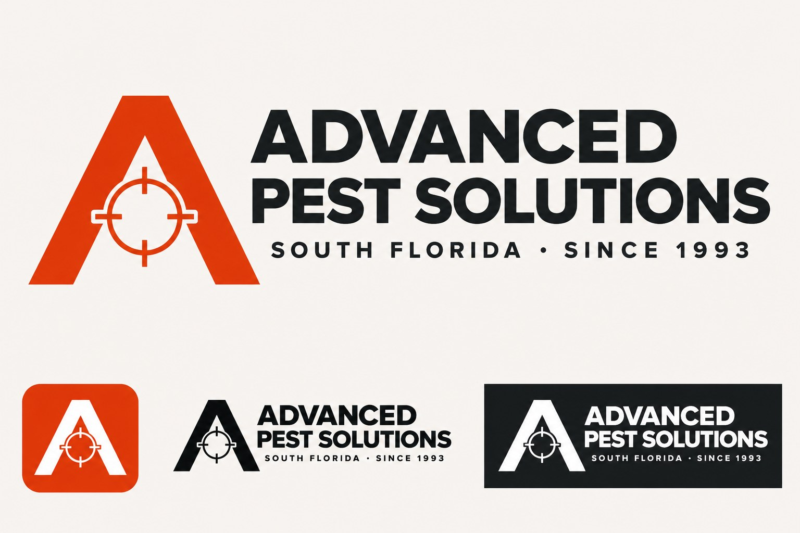

Option 1
Target A
RecommendedA bold letter A whose crossbar is the crosshair from today's logo. It keeps the mark customers have seen on your trucks and uniforms for years, and looks clean and modern. It works well as a small phone icon and as a big truck door decal.